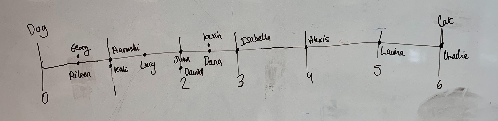

11/08/2021
👩🏫
General:Meeting with Dr. Jimenez to discuss our idea about quorum sensing and to hear about the projects in his lab.
11/08/2021
👩🏫
General:Meeting with Mark Isalan to discuss our idea about evolving a quorum sensing protein. He suggests starting with specific documentation of AHL molecules and the LuxR family proteins that bind them.
11/08/2021
👩🏫
General:Meeting with Prof. Guy Bart Stan to discuss our idea about quorum sensing from a mathematical perspective.
11/08/2021
👩🏫
General:Meeting with SynBIC to discuss the admin side of our project. They gave us advise on reaching out to sponsors, finding a primary supervisor, and how to divide the work between us whilst COVID restrictions remained in place.
11/08/2021
General:Happy Birthday to David! 🎂
Chose the track of our project: "Molecular Evolutionary Outcomes".
11/08/2021
👩🏫
General:Meeting with our PhD advisor Alexis Casas.
11/08/2021
General:Started researching structural info on EsaR/I, methods of generating non-cognate inducer, possible list of non-cognate AHLs.
11/08/2021
General:Found initial list of non-cognate inducers from SigMol, reviewed experimentally-reviewed structural data on EsaR and EsaI, reviewed literature on the key residues involved in AHL binding, reviewed methods for generating the mutation library
11/08/2021
General:More research on EsaR and potential non-cognate AHLs we could target. Filled out the iDEC RRI form
11/08/2021
General:Contacted organisations at Imperial for funding.
Dry Lab:Planned out the bioinformatics experiments for structure prediction of EsaR and docking of the predicted structure with AHL ligands.
11/08/2021
👩🏫
General:Meeting with our supervisor Mark Isalan. Made our Twitter account! Made a spreadsheet of life sciences companies we could contact to seek funding from. Completed the Responsible Research Information form.
Wet Lab:Decided on and planned out saturation mutagenesis experiments for generating our library of mutants
11/08/2021
General:Emailed Professor Mike Sternberg and the Computational Biology Society to seek advice on our bioinformatics workflow. Emailed a researcher who previously worked on EsaR to see if she would be willing to speak with us.
Dry Lab:Began structural prediction of EsaR using I-TASSER and JPred.
11/08/2021
General:Reviewed more literature on the AHL binding domain of quorum sensing proteins.
Wet Lab:Revised our experimental plans for using site saturation mutagenesis.
11/08/2021
Dry Lab:Submitted a structure prediction job on Robetta.
11/08/2021
👩🏫
Dry Lab:Meeting with Charlie from Computational Biology Society/MSc Bioinformatics who has kindly provided advice on structural prediction software.
Wet Lab:Reviewed possible methods for screening and selecting for library variants.
11/08/2021
General:Drafted a pitch document that outlines our project to send to organisations when asking for support. Emailed Faculties at Imperial to seek financial support or spare consumables.
11/08/2021
General:Wrote up and submitted our team abstract for iDEC.
11/08/2021
General:Created a pitch deck for sponsors, edited our pitch email for sponsors to be more business-oriented. Started a wiki timeline log. Created a team Benchling account which we used throughout the competition to design primers and plasmids, and keep track of sequences and protocols.
11/08/2021
General:Completed sponsorship tier, email and pitch deck documents.
11/08/2021
General:Set up a meeting for our team member David to show us how to use Github. Collated a massive spreadsheet, inherited from previous Imperial synbio teams, with a collection of contacts from many biotech companies - we will be going through the contact list systematically to seek financial support and sponsoring.
11/08/2021
General:Meeting for github intro. Laima (our resident Estonian) emailed Estonian organisations to ask for financial support. Attempted to reach out to other students by introducing ourselves and our project on SynbioUK Slack channel.
Wet Lab:Had a discussion on possible screening methods, particularly using replica plating.
11/08/2021
General:Split our giant spreadsheet of biotech contacts into 10 so that each team member would email about 20-30 people. For each email we included our pitch deck and a document outlining what kind of publicity we would provide for different levels of sponsorship.
Dry Lab:Completed structure prediction of EsaR using multiple software. Used PyMOL to visualise and compare results across software.
11/08/2021
General:The Imperial Life Sciences Department kindly agreed to provide some funding for us to spend on lab consumables.
Dry Lab:Analysed the predicted structures on PyMOL and compared them to the crystallised homolog TraR (PDB: 1H0M).
11/08/2021
General:Filled out the Bio1 form which is required for us to begin wet lab work in the Hackspace. Organized a Benchling tutorial led by team member Aarushi.
Dry Lab:Meet with Charlie (MSc Bioinformatics) to discuss our structure prediction results and to ask about next steps in docking.
Wet Lab:Placed orders for the non-cognate AHLs we would use as target molecules for our variant library.
11/08/2021
General:Finalised the design for a plasmid construct containing the EsaR gene and its promoter, and placed an order for it from Twist Biosciences. Attended an iDEC webinar.
Dry Lab:Worked with Charlie (MSc Bioinformatics) to use AlphaFold2 for structure prediction just one day after its code was made public through a Nature article (https://www.nature.com/articles/s41586-021-03819-2).
11/08/2021
Dry Lab:Using ProteinsPlus (https://proteins.plus/), analyzed protein-ligand interactions for the predicted EsaR structures and its cognate ligand 3OC6HSL.
11/08/2021
Dry Lab:Analysed protein-ligand interactions using PDBsum (http://www.ebi.ac.uk/thornton-srv/databases/cgi-bin/pdbsum/GetPage.pl?pdbcode=index.html). Visualised protein-ligand interactions on PyMOL.
Wet Lab:Prepared 20 LB agar plates.
11/08/2021
Dry Lab:Manually analysed key residue interactions between the predicted EsaR structure and its cognate 3OC6HSL on PyMOL.
Wet Lab:Prepared more LB agar plates with chloramphenicol. Created AHL stock solutions.
11/08/2021
Dry Lab:Finalised 2D maps of key residues involved in the protein-ligand interaction on LigPlot and ProteinsPlus. Decided to proceed with LigPlot as it is more widely recommended in the literature. Identified the coordinates of the ligand binding pocket for docking.
11/08/2021
General:Happy Birthday to Isabelle! 🎂
Dry Lab:Docked the ligand to a predicted EsaR structure using DockThor.
11/08/2021
General:Had our biweekly meeting where the progress and next steps for dry and wet lab were discussed. Online meeting with Evonetix to discuss a sponsorship!
Dry Lab:Made some slides to showcase our progress in bioinformatics so far.
Wet Lab:Wet lab meeting to collate the list of reagents and go over the protocols and methods.
11/08/2021
Wet Lab:Created a detailed flowchart of wet lab tasks and experiments.
11/08/2021
General:Happy birthday to Lucy! 🎂
We had an in-person meeting with a potential sponsor. Online meeting with a company see whether we could borrow some of their lab equipment. Emailed lab technicians from the Department of Life Sciences at Imperial to ask whether any labs had some consumables they could spare us.
11/08/2021
👩🏫⚠️💡
General:Contacted Tom Ellis to ask for advice.
Dry Lab:Finalised the identification of key residues from 2D maps.
Wet Lab:Made a bacterial starter culture for electrocompetent cells, but didn't realise the Hackspace had ran out of spectrophotometer cuvettes and we could not measure OD600, and we didn't realise that the centrifuge at the Hackspace had tripped a wire and broke, so we could not proceed with making electrocompetent cells.
Our reflections:Looking back on this two months later, we were severely inexperienced in the lab at this time and this is a great example that shows our lack of foresight during the earliest stages of our time in the lab. We've grown so much since then!
11/08/2021
⚠️💡
Wet Lab:We asked around if anyone could lend us cuvettes as soon as possible (we emailed about 4 different groups, and they all said they could provide us some) while the Hackspace also placed an order for them.
Our reflections:We were pretty resourceful but we were not yet perceptive of what sorts of lab consumables were commonplace and how difficult it would be to get them. Cuvettes are common for most labs so there was no need for us to ask so many people, and we didn't know how quickly certain consumables could be delivered.
11/08/2021
Dry Lab:Identified key residues from two additional predicted structures after docking: on Phyre and AlphaFold.
11/08/2021
General:Organized a team social at Nando's!
Wet Lab:Successfully made electrocompetent cells!
11/08/2021
General:Started writing a mini literature review on quorum sensing transcription regulators.
11/08/2021
General:Posted a second note about our project in SynbioUK Slack channel. Had an online meeting with Twist Biosciences to seek advice on our library generation methods. Secured a number of free Sanger sequencing reactions from Genewiz!
11/08/2021
👩🏫💡
General:Had an in-person meeting with Mike Tennant from the Centre of Environmental Policy at Imperial who offered us advice on how to pitch our ideas. Emailed our primary supervisor Mark for feedback on our mutagenesis and screening protocol.
Wet Lab:Designed primers for our site-saturation mutagenesis protocol - each target residue would be mutated using one mutagenic primer, and to obtain a protein with 4 mutated primers we would carry out sequential rounds of mutagenic PCR.
Our reflections:This was one of the first methods of mutagenesis that we were planning to use. Throughout the rest of the month with input from multiple different advisors, we had pivoted to different methods several times since advisors often gave contradictory advice. At the time we were seeking for a single right method to carry out our experiment, whereas we have since learnt that there can be multiple correct ways to generate our library and that different people give different advice based on what's historically worked for them. We should trust our own scientific instincts more and understand that every scientist has their own preferred methods.
11/08/2021
Wet Lab:Further worked on our primer design. Discussed our site saturation mutagenesis method based on feedback from Mark and the representatives from Twist.
11/08/2021
General:Reviewed team's chart of deadlines and progress.
11/08/2021
Wet Lab:Ordered primers!
11/08/2021
Dry Lab:The dry lab team worked on a Python script that would generate the sequences for all 20 000 of our mutants - these sequences would be used for in silico analysis and screening.
11/08/2021
⚠️💡
Dry Lab:Edited the AlphaFold script on Google Colab to allow the code to loop through multiple sequences, so that we would not have to manually submit each variant.
Wet Lab:Created stock solutions of our AHLs.
Our reflections:We were still quite inefficient in the lab and small tasks like creating stock solutions would take us relatively long amounts of time. We realise that efficiency in the lab comes a lot from confidence and experience.
11/08/2021
Dry Lab:Wrote up a draft for the Methods section of the report.
11/08/2021
Dry Lab:Finalised the Python script to generate mutated sequences.
11/08/2021
Dry Lab:Read more literature on various softwares used for in silico saturation mutagenesis and tried some of them out.
11/08/2021
⚠️💡
General:We found out that the Hackspace would be closed for a week starting next week and scrambled to find other alternatives for lab space. We were worried that we would lose a week of wet lab work, which would be a significant hit given how limited our time was. We emailed our primary supervisor Mark, the lab technicians from the Department of Life Sciences, and companies that we thought could arrange lab space for us.
Dry Lab:Call with the dry lab team to discuss the dry lab workflow. Meeting with Charlie (MSc Bioinformatics) to discuss in silico methods for saturation mutagenesis - he advised us that it would be unrealsitic to screen through all 20 000 variants in silico.
Our reflections:We had set many unrealistically high goals for ourselves, such as screening through the structures of all 20 000 variants in silico - we were quite unwilling to admit to ourselves how little time we had left for the project, and we also did not have a good understanding of the capacity of existing methods.
11/08/2021
⚠️💡
General:Our plasmid from Twist was going to be delayed, and all of our wet lab experiments had been planned around this plasmid. We discussed how we could adapt to this unfortunate news. We decided that we could perform all experiments on LuxR first since it is an EsaR homolog, so we could familiarise ourselves with the experiments and still collect useful data, then once the plasmid containing EsaR arrives we would be able to jump right in.
Dry Lab:Tested mCSM-lig as a software to analyse how a mutant protein may interact differently with a given ligand.
Our reflections:It felt like everything was going wrong this week - we only had one and a half months left and we suddenly had no lab space and no gene. We felt really disappointed in ourselves, but persisted. We were forced to think of solutions and be as resourceful as possible. Although this was not ideal, ultimately this experience made us much better scientists!
11/08/2021
👩🏫
General:Drafted the Introduction section of the report. Arranged with the Department of Life Sciences to borrow their gel tanks.
Dry Lab:Arranged a call with Dr Suhail A Islam from the Centre of Integrative Systems Biology and Bioinformatics. He provided us guidance on what we could do for dry lab in the remaining time we had.
Wet Lab:Made some stock solutions (e.g. 20% Glc).
11/08/2021
General:Arranged with the Department of Life Sciences to use teaching labs while the Hackspace was closed. Changed the delivery address for all pending deliveries to the South Kensington campus instead of the Hackspace (where the teaching labs were).
Dry Lab:Call with the dry lab team.
Wet Lab:Made some media and a starter culture for electroporation.
11/08/2021
General:Spent a productive last day in the Hackspace guessing if our team members were dog people or cat people.
11/08/2021
General:Had a tour in the Chain lab in South Kensington where we would be based while the Hackspace was closed.
Dry Lab:Succeeded in using our edited version of AlphaFold on Google Colab to loop through multiple sequences and predict their structures.
11/08/2021
General:Finalised the draft of our introduction.
Dry Lab:Attempted to find a way to automate the conversion of .pdb files (the output of AlphaFold) into .pdbqt files (the required input for AutoDock Vina)
11/08/2021
General:Started working in our primary supervisor Mark's lab, under the day-to-day supervision of Jure. When we were first organising lab space during the start of iDEC, COVID restrictions were still in place and it was unsure whether Mark's lab would have space to accommodate us.
Dry Lab:Attempted to use the SOAP of SwissDock as an alternate docking software to AutoDock Vina.
Wet Lab:Made up some primer stock solutions. Tested our mutagenesis method on GFP so see whether we could successfully introduce mutations using sequential rounds of mutagenic PCR, using the change in fluorescence as a visual confirmation.
11/08/2021
Wet Lab:Ran a KLD reaction to recircularise the GFP PCR product following gel extraction.
11/08/2021
⚠️
General:Got an agreement from Genewiz to get their barcodes for free sequencing.
Dry Lab:Explore the use of FoldX to analyse stability of mutant structures.
Wet Lab:Running sequential rounds of PCR to introduce multiple mutations did not work. We hypothesize that the KLD components were interfering with PCR, so we tested methods of removing KLD in between PCR rounds.
11/08/2021
General:Set up a team Figma account to begin designing our iDEC wiki. Arranged with Jure to use the LuxR plasmids in his lab.
Dry Lab:Got AutoDock Vina to work to dock the ligand to mutated protein structures.
Wet Lab:Designed primers for site-saturation mutagenesis on the LuxR plasmids.
11/08/2021
👩🏫
General:Meeting with Prof Pietro Spanu to seek advice on cloning methods.
Dry Lab:Continued encountering problems with automated file conversion of .pdb to .pdbqt
Wet Lab:Completed another dry run of sequential mutagenic PCR on GFP. Transformed and plated the cells.
11/08/2021
Wet Lab:Completed a dry run of our screening and selection protocol on the cells containing the variant GFP library. Screening was performed using a 96-well plate on a microplate reader.
11/08/2021
⚠️
General:Received confirmation from Twist that our plasmid was going to be further delayed. Decided that we could no longer wait for the plasmid and that we must find alternate ways to get the EsaR gene. We emailed labs that might have the gene, and brainstormed methods of gene assembly using oligos since the delivery time for oligos is much quicker than ordering an intact gene.
Dry Lab:Attempted to troubleshoot the various attempts at automating conversion of .pdb to .pdbqt
Wet Lab:Prepared interesting GFP variants for Miniprep and sequencing. Made a batch of electrocompetent cells for LuxR experiments. Analysed data that was collected yesterday by the microplate reader.
11/08/2021
💡
General:Discussed methods of gene assembly, particularly an end-to-end ligation method that Mark had previously developed for genes up to 1 kb in length. Began designing oligos for this end-to-end ligation method. Our insert (containing the EsaR gene and its promoter) would be around 1.4 kb long, and would require assembly of 13 oligos into the correct order in a single step reaction.
Our reflections:Assembling 13 oligos end-to-end in a single step reaction was an ambitious goal. Our PhD advisors thought it was highly unlikely to work. Our inexperience actually benefitted us in this moment - we were naive enough to pursue crazy ideas and take risks like this one. And luckily we had enough funding to buy these oligos.
11/08/2021
General:Happy birthday to Dana! 🎂
We drafted diagrams for the report and wiki and worked further on the wiki design. We also designed primers for Gibson assembly of EsaR - we were willing to try any and all possible methods of getting the gene at this point. In the mean time, we would continue working with LuxR.
Dry Lab:Tried using the Imperial bioinformatics server to run jobs.
11/08/2021
General:Discussed our different gene assembly methods and wrote up protocols for them.
11/08/2021
👩🏫
General:Discussed end point measurements and their optimization with our secondary PhD advisor Emily.
Wet Lab:Began screening WT-LuxR against non-cognate AHLs so that we could compare this data with the variant library later on. Loaded two microplates with a LuxR plasmid and two different AHLs.
11/08/2021
👩🏫
General:Discussed the future of our project with our day to day PhD supervisor Jure. Emailed the Flow Cytometry facility manager Jessica to set up a meeting.
Wet Lab:Began generating our LuxR variant library. We first used PCR to generate a mutagenic gene fragment and to amplify the plasmid backbone, then used Gibson assembly to put these two genes together.
11/08/2021
Wet Lab:Tested another round of Gibson assembly to generate our LuxR library, this time also adding a desalting step to see whether it would affect transformation efficiency. Transformed and plated cells with our LuxR variant library.
11/08/2021
General:Finished the design of the Home and About pages in Figma.
11/08/2021
👩🏫
General:Meeting with Jessica from the Flow Cytometry facility to discuss whether flow cytometry and cell sorting would be a suitable method for us to screen through our variant library. She gave us a demo of cell sorting and explained the process.
Wet Lab:We have a LuxR variant library! Picked out some colonies to send for sequencing. Replated a portion of the library on plates containing non-cognate AHLs.
11/08/2021
👩🏫
General:Carried out some lab chores: filled out pipette boxes and emptied out bins.
Dry Lab:Had a Teams meeting with Dr Islam to seek help with docking.
Wet Lab:Miniprepped colonies for sequencing. Discussed flow cytometry and questions we had about the method.
11/08/2021
General:Analysed the sequencing data. Planned in detail the different conditions we would test for assembling EsaR.
Dry Lab:Used BLAST to search for more homologues of EsaR and LuxR, and looked specifically in the Protein Data Bank for crystallised homologues. Manually annotated the interactions of homologues with their cognate ligands.
Wet Lab:Poured a big plate + some smaller ones with AHL and antibiotics. Did Gibson assembly. Made elextrocompetent cells and transformed them with the Gibson-assembled constructs. Prepared controls and samples for FACS.
11/08/2021
Dry Lab:Completed multiple sequence alignment of the homologous structures on Clustal Omega.
Wet Lab:Resuspended the cultures from yesterday in PBS, which is required for cell sorting. Brought our samples to the FACS facility and performed cell sorting! We selected cells that showed fluorescence against the non-cognate C8HSL. Then we let the 96 well-plates (containing the sorted cells) grow overnight.
11/08/2021
Dry Lab:Worked on writing up the dry lab results for the report.
Wet Lab:Used the microplate reader to measure data from the 96-well plates with cells sorted yesterday. Made our first attempt at end-to-end ligation assembly of EsaR, ran the products on a gel.
11/08/2021
General:Happy birthday to Laima! 🎂
We analysed microplate data.
11/08/2021
Wet Lab:Continued attempts to assemble EsaR. Transformed cells with our LuxR library for another round of FACS tomorrow.
11/08/2021
👩🏫
Dry Lab:Had another call with Dr Islam to discuss the outcome of our dry lab experiments and what we could do in the remaining days.
Wet Lab:Sent off samples to FACS. Grew some of our LuxR library on large culture dishes. Continued our assembly of EsaR and ran more gels to test conditions.
11/08/2021
Wet Lab:End of our days in the lab for the competition.